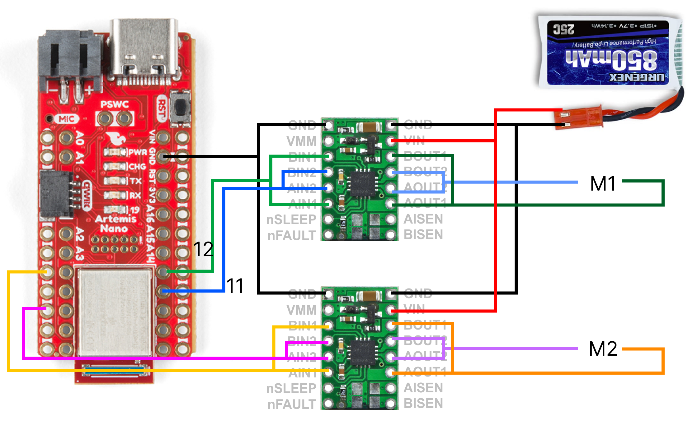
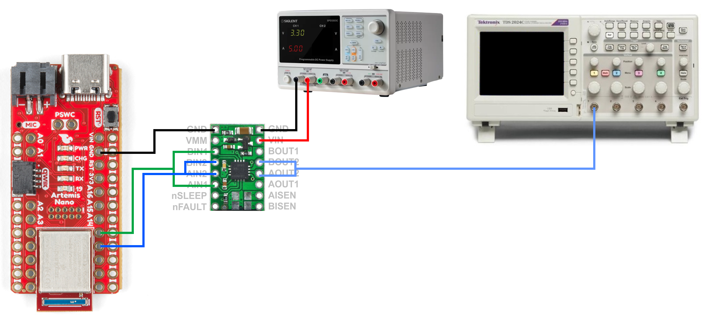
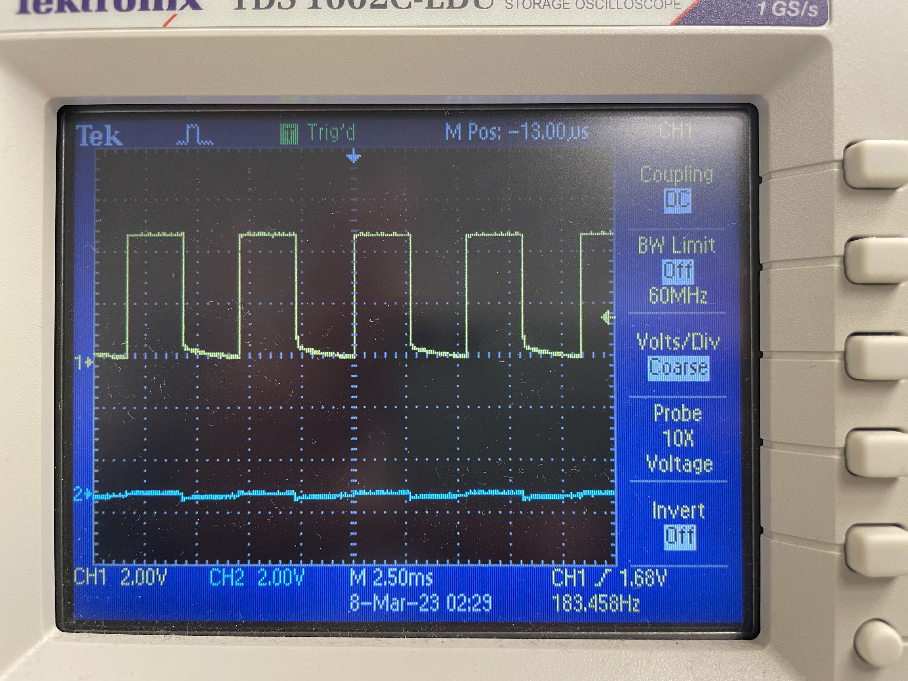
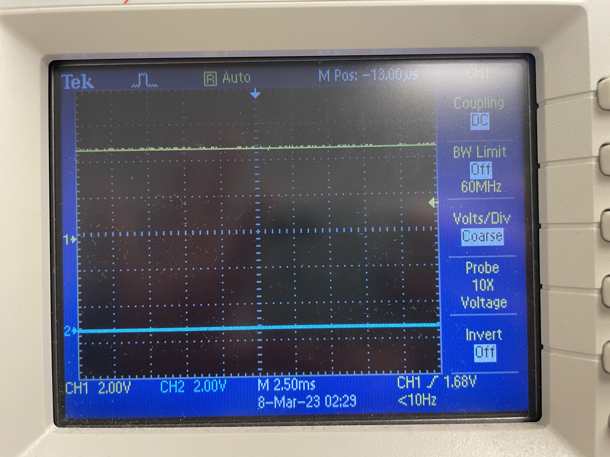
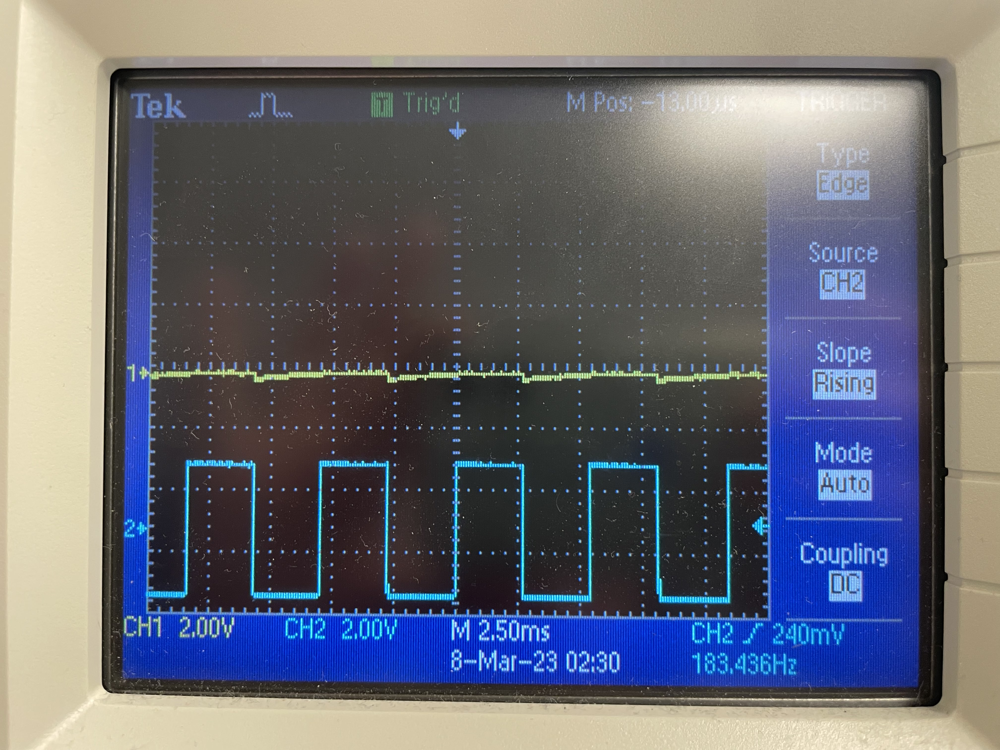
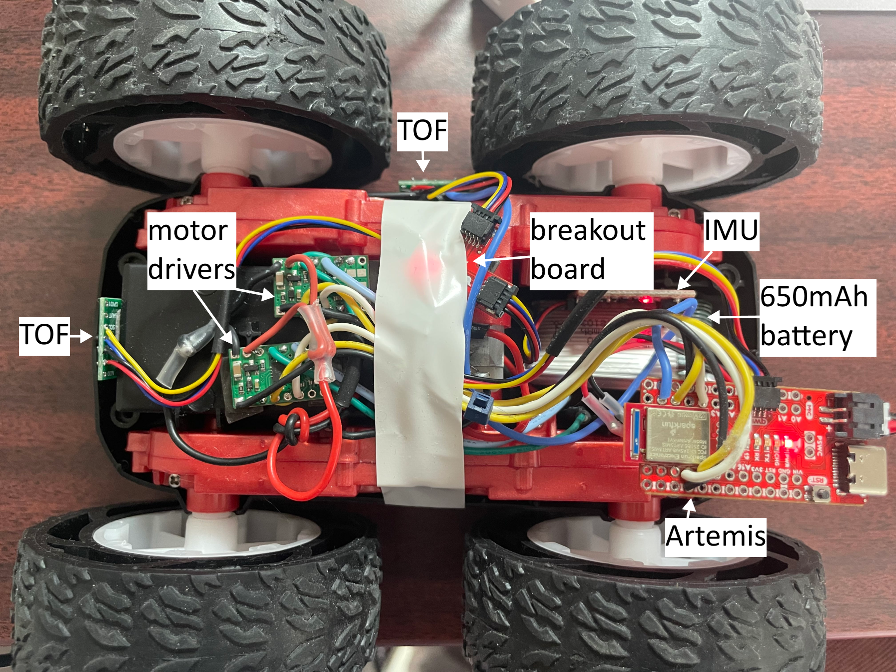

Objective
In lab 5, I used PWM to control the speed of the motors and control the car with open loop control.
Prelab
The following image shows how I connected the motor drivers, Artemis, and the battery. Note that we are parallel-coupling the inputs and outputs of the motor driver.
Pins 4, 6, 11, and 12 were used for the motor control. These were chosen since they were able to drive PWM signals, and the location of the pins was optimal for my sensor setup. The 850mAh battery was used for powering the motors, while the 650mAh battery was used for powering the Artemis. This is because the motors may create noise that would affect the logic signals. Additionally, the battery with the larger capacity and current was given to the motors, as they draw more power than the logic side of the Artemis.
Power Supply
The following images show the oscilloscope outputs from the motor driver for different PWM signals, as well as the hookup diagram used to achieve these signals. The power supply is set up to approximately match the voltage provided by the battery; I set it to 3.3V (slightly lower) to be safe. The current limit was set to around 5A, but the motor driver pulled much less than that while operating.
The following shows the second input of the motor driver being driven with 50% duty cycle while the first input is held low.
The following shows the second input of the motor driver being driven with 100% duty cycle while the first input is held low.
The following shows the first input of the motor driver being driven with 50% duty cycle while the second input is held low.
The following shows the motor being driven both backwards and forwards. I wrote a few helper functions to more easily control the robot's actions.
This same process was then repeated for the second motor driver. The same code and setup was used for the second motor driver with the exception of LIN1 and LIN2 being replaced with RIN1 and RIN2. The same behavior and oscilloscope readings were acquired. Thus, I was able to switch to battery power and spin both wheels in both directions, as shown in this video.
Car Components
The following image shows the placement of all of the components in the car.
PWM Lower Limit
Using the same structure as before, I modified the analog PWM values to be as small as possible while allowing for the robot to move. To do this, I started with a PWM value of 40 and raised it until the robot began moving. For the MEng task, I used the same method, finding the minimum PWM value needed to keep the robot moving after the initial start. Since I tested that all of the helper functions already worked as expected while the robot was off of the ground, the inability to move was most likely due to friction.
The lower limit for the PWM are as follows:
| Motion | PWM value |
|---|---|
| Start from rest | 75 |
| Lowest speed after starting | 60 |
| Right turn from rest | Unable to start from rest, even at max PWM |
| Left turn from rest | Unable to start from rest, even at max PWM |
| Right turn after starting forward | Unable to turn, even at max PWM |
| Left turn after starting forward | Unable to turn, even at max PWM |
The following video demonstrates the robot using the higher 75 PWM value to overcome friction before driving forward at the slowest speed with 60 PWM value.
I found that the robot was able to settle at its slowest speed within 500 ms.
Open Loop Control
The following video demonstrates the robot driving forwards, backwards, and then turning left then right, making an arc. The code is attached underneath as a gist. Since my room is small, I had to lower the speed of the robot.
Calibration
Surprisingly, I found that the difference between the motors was very minimal, and that the robot was able to go in a straight line without modifications to the helper functions defined above. The following demonstrates the robot moving in a straight line with the motor drivers at 50% duty cycle.
analogWrite Frequency
For the Artemis board, analogWrite only has one frequency (500 Hz). However, a PWM signal with a much higher or much lower frequency can be created with modifications to the counter/timer and the repeated pulse mode. For example, if the desired PWM frequency was around 3kHz, with a desired 75% duty cycle, we would first configure the clock to output at that frequency. Then, to achieve a 75% duty cycle, we would then set the CMPR0 register to be 75% of the maximum count value. Thus, every time the counter reached that value, the output value would toggle. After the counter reaches its maximum value and resets to 0, it then goes back to its original value and restarts the process.
According to the motor driver datasheet, the range of input PWM frequencies are 0 Hz to 200 kHz. However, it states that "the voltages applied to the inputs should have at least 800 ns of pulse width to ensure detection." With 500 Hz, this results in the (theoretical) range from ~0% duty cycle to ~100% duty cycle. With a higher PWM frequency, this usable duty cycle range reduces due to the smaller PWM period. As seen in these videos, the 500 Hz input frequency works well, so there is no need to increase the frequency.